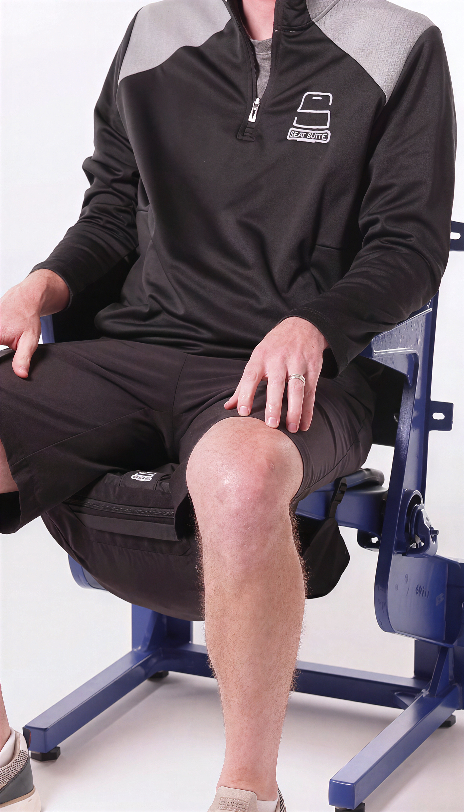
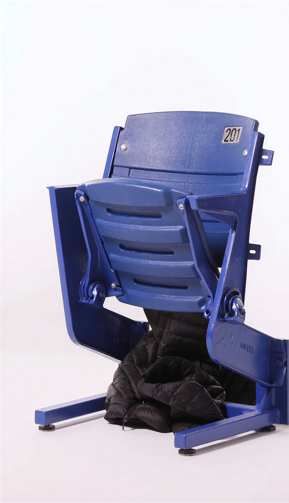
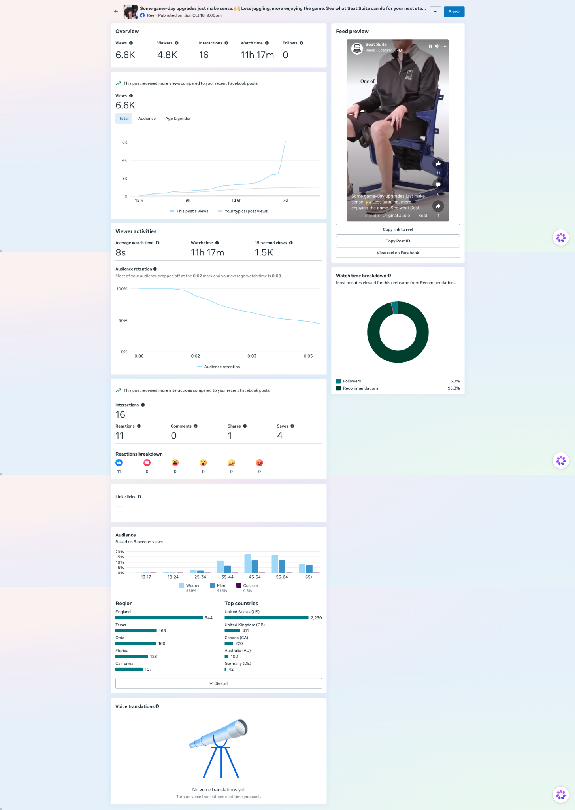

A little less juggling.
A lot more game day.
Seat Suite
FOCUSConcept development · Product storytelling · Short-form video · Performance insights
Making a practical stadium accessory feel relevant through a simple, relatable story: the problem, the product, and the payoff.
 02 / THE DEMONSTRATION
02 / THE DEMONSTRATION
01 / THE CONTEXTHow do you sell the need before the product?
Seat Suite is an under-seat organizer designed to keep personal belongings out of the way during sporting events. Its benefit is easy to appreciate once you see it in action—but less obvious when the product is shown alone.
The creative challenge was to make that benefit immediately recognizable: start with a familiar game-day inconvenience, then show a practical solution without overexplaining it.
Start with the feeling.
Show the fix.
Instead of leading with product specifications, the story leads with a relatable behavior: keeping track of your things while trying to enjoy the game.
Recognize the friction
Make the everyday inconvenience feel familiar, so viewers understand the context at a glance.
Demonstrate simply
Let the product's placement and function carry the message without relying on dense copy.
Make the payoff visible
Show belongings stored beneath the seat and the seating area ready for the game.
One story.
Three clear beats.
These frames illustrate the straightforward visual sequence behind the product demonstration.

Ground the creative in a recognizable game-day setting.
Make the product interaction the center of the story.
Close on a simple, visual demonstration of the benefit.
The product story, in motion.
Short-form video gives the audience an immediate view of how the organizer fits beneath the seat. The goal is to make the product's utility understandable in seconds.
The Instagram post is linked here as the published creative. The performance metrics below are from the corresponding Facebook reel shown in Meta Business Suite.
Watch on Instagram ↗Creative meets real response.
Individual Facebook reel insights, as captured in Meta Business Suite. These are post-level observations—not sales or paid-ad return.
Watch time from recommendations
Most of the watch time came from recommendations rather than followers, suggesting discovery beyond the existing audience.
An opportunity in the opening
Meta's retention note flags an early drop-off. The next creative test would focus on a faster, more compelling first two seconds.
View source analytics screenshot +
Meta Business Suite, individual Facebook reel insights. Metrics reflect the screenshot provided for this project; no sales attribution or paid distribution is claimed.

Good creative is never finished.
The reel reached more viewers than recent Facebook posts, but reach is only part of the story. The early audience drop-off creates a clear opportunity to refine the hook and make the value proposition visible sooner.
Open on the frustration before revealing the product.
Show the organized seat immediately, then demonstrate how it happens.
Compare retention, saves, shares, profile actions and—if properly tracked—site visits and conversions.
These are proposed next experiments, not tests that have already been conducted.
Design with purpose.
Learn from the response.
This project brings together audience-centered storytelling, clear product communication, and performance-aware creative thinking—the kind of work I want to keep building.